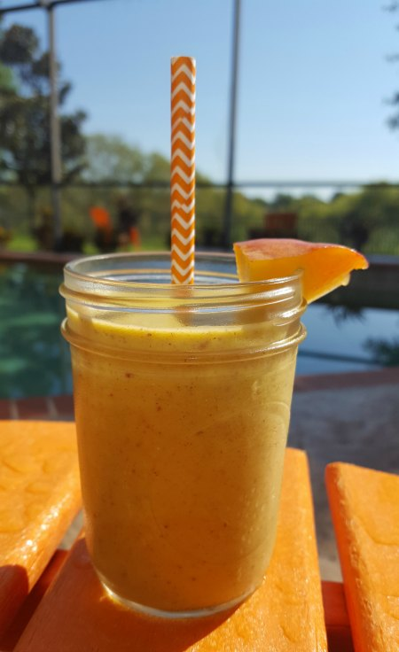

Peach avocado smoothie

Description
This is an easy and healthy drink to make. Good for in between meals
Also great as it is packed with nutrients and vitamins. Perfect for
before work-out, after workout and even as a snack between meals
It can be made with the left-overs after a fruit salad,
since it doesn't require many ingredients.
Ingredients
- 1 ripe avocado
- 1 ripe banana
- 1 peach, pitted & chopped
- Juice of 1 lemon
- 1 cup buttermilk
- 1 tablespoon honey(optional, for added sweetness)
- A few ice cubes(optional)
Steps
- Scoop out the avocado flesh and add it the blender
- Peel, slice and add the banana to the blender
- chop the peach, remove and discard the pit. add to blender
- Squeeze the juice of one lemon into the blend
- Add the buttermilk and all the remaining ingredients into the blender
- Blend until smoothie and creamy
- pour into a glass and enjoy
Home